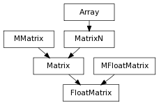

A 4x4 matrix class that wraps Maya’s api FloatMatrix class, It behaves identically to Matrix, but it also derives from api’s FloatMatrix to keep api methods happy
alias of MFloatMatrix
pymel.core.datatypes.EulerRotation
pymel.core.datatypes.FloatPoint
Enter search terms or a module, class or function name.